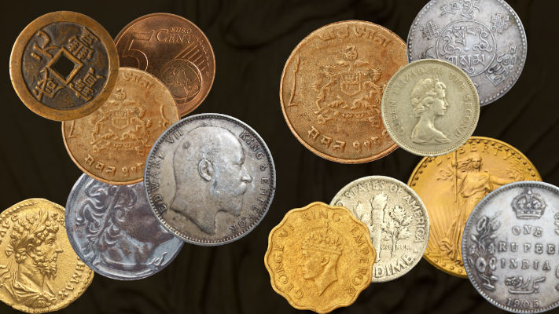

In 1933, a batch of rare coins was struck but never issued for use as currency. While nearly half a million were minted, only one coin of its type was made legal for circulation. Sold in the last decade for almost $20 million, all other versions of the coin, minted in 1933, were never officially released and were ordered to be melted down. Despite this, a small number of these coins were not destroyed and were acquired by coin dealers under suspicious circumstances. The descendants of one of these dealers took the government to court over whether they could be considered the rightful owners of some of these stolen coins. What is the name of the attorney that argued the appeal on behalf of this family?
